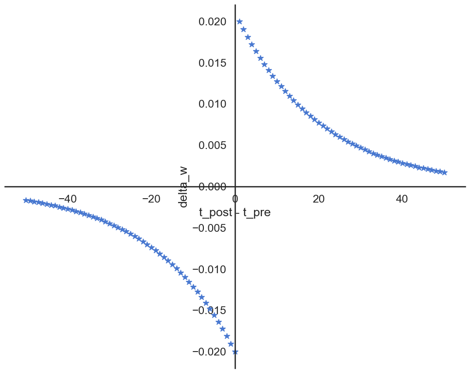

!pip install ANNarchySTDP
This notebook demonstrates the online implementation of the spike time-dependent plasticity rule.
from ANNarchy import *
clear()
setup(dt=1.0)ANNarchy 4.7 (4.7.1.5) on darwin (posix).The STDP learning rule maintains exponentially-decaying traces for the pre-synaptic and post-synaptic spikes.
\tau^+ \, \frac{d x(t)}{dt} = -x (t)
\tau^- \, \frac{d y(t)}{dt} = -x (t)
LTP and LTD occur at spike times depending on the corresponding traces.
- When a pre-synaptic spike occurs, x(t) is incremented and LTD is applied proportionally to y(t).
- When a post-synaptic spike occurs, y(t) is incremented and LTP is applied proportionally to x(t).
STDP = Synapse(
parameters = """
tau_plus = 20.0 : projection ; tau_minus = 20.0 : projection
A_plus = 0.01 : projection ; A_minus = 0.01 : projection
w_min = 0.0 : projection ; w_max = 2.0 : projection
""",
equations = """
tau_plus * dx/dt = -x : event-driven # pre-synaptic trace
tau_minus * dy/dt = -y : event-driven # post-synaptic trace
""",
pre_spike="""
g_target += w
x += A_plus * w_max
w = clip(w - y, w_min , w_max) # LTD
""",
post_spike="""
y += A_minus * w_max
w = clip(w + x, w_min , w_max) # LTP
"""
)We create two dummy populations with one neuron each, whose spike times we can control.
pre = SpikeSourceArray([[0.]])
post = SpikeSourceArray([[50.]])We connect the population using a STDP synapse.
proj = Projection(pre, post, 'exc', STDP)
proj.connect_all_to_all(1.0)<ANNarchy.core.Projection.Projection at 0x1170b24f0>compile()Compiling ... OK The presynaptic neuron will fire at avrious times between 0 and 100 ms, while the postsynaptic neuron keeps firing at 50 ms.
pre_times = np.linspace(100.0, 0.0, 101)weight_changes = []
for t_pre in pre_times:
# Reset the populations
pre.clear()
post.clear()
pre.spike_times = [[t_pre]]
post.spike_times = [[50.0]]
# Reset the traces
proj.x = 0.0
proj.y = 0.0
# Weight before the simulation
w_before = proj[0].w[0]
# Simulate long enough
simulate(105.0)
# Record weight change
delta_w = proj[0].w[0] - w_before
weight_changes.append(delta_w)We can now plot the classical STDP figure:
import matplotlib.pyplot as plt
import seaborn as sns
sns.set(style="white", palette="muted", color_codes=True)
sns.set_context("talk")
fig = plt.figure(figsize=(10, 8))
ax = fig.add_subplot(1, 1, 1)
plt.plot(50. - pre_times, weight_changes, "*")
plt.xlabel("t_post - t_pre")
plt.ylabel("delta_w")
sns.despine()
ax.spines['left'].set_position('zero')
ax.spines['bottom'].set_position('zero')
plt.tight_layout()
plt.show()